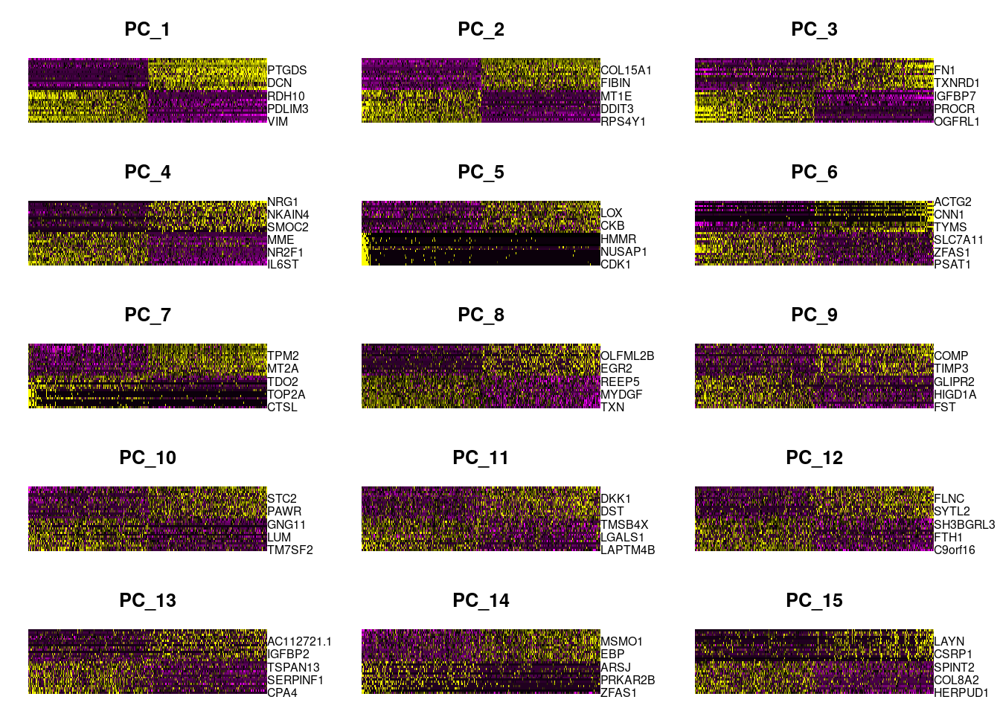

ANT1/ANT2_Pilot
Anthony Hung
2019-12-02
Last updated: 2019-12-19
Checks: 6 1
Knit directory: OAStrain/
This reproducible R Markdown analysis was created with workflowr (version 1.5.0). The Checks tab describes the reproducibility checks that were applied when the results were created. The Past versions tab lists the development history.
The R Markdown file has unstaged changes. To know which version of the R Markdown file created these results, you’ll want to first commit it to the Git repo. If you’re still working on the analysis, you can ignore this warning. When you’re finished, you can run wflow_publish to commit the R Markdown file and build the HTML.
Great job! The global environment was empty. Objects defined in the global environment can affect the analysis in your R Markdown file in unknown ways. For reproduciblity it’s best to always run the code in an empty environment.
The command set.seed(20191127) was run prior to running the code in the R Markdown file. Setting a seed ensures that any results that rely on randomness, e.g. subsampling or permutations, are reproducible.
Great job! Recording the operating system, R version, and package versions is critical for reproducibility.
Nice! There were no cached chunks for this analysis, so you can be confident that you successfully produced the results during this run.
Great job! Using relative paths to the files within your workflowr project makes it easier to run your code on other machines.
Great! You are using Git for version control. Tracking code development and connecting the code version to the results is critical for reproducibility. The version displayed above was the version of the Git repository at the time these results were generated.
Note that you need to be careful to ensure that all relevant files for the analysis have been committed to Git prior to generating the results (you can use wflow_publish or wflow_git_commit). workflowr only checks the R Markdown file, but you know if there are other scripts or data files that it depends on. Below is the status of the Git repository when the results were generated:
Ignored files:
Ignored: .RData
Ignored: .Rhistory
Ignored: .Rproj.user/
Ignored: output/ANT1.2.rds
Ignored: output/ANT1_seurat.rds
Ignored: output/ANT2_seurat.rds
Untracked files:
Untracked: .RDataTmp
Unstaged changes:
Modified: analysis/ANT1_ANT2_.Rmd
Note that any generated files, e.g. HTML, png, CSS, etc., are not included in this status report because it is ok for generated content to have uncommitted changes.
These are the previous versions of the R Markdown and HTML files. If you’ve configured a remote Git repository (see ?wflow_git_remote), click on the hyperlinks in the table below to view them.
| File | Version | Author | Date | Message |
|---|---|---|---|---|
| Rmd | 4f10224 | Anthony Hung | 2019-12-18 | Merge Seurat Objects from both samples |
| html | 4f10224 | Anthony Hung | 2019-12-18 | Merge Seurat Objects from both samples |
| Rmd | c49f2ad | Anthony Hung | 2019-12-17 | change threshold of nfeatures per cell |
| html | c49f2ad | Anthony Hung | 2019-12-17 | change threshold of nfeatures per cell |
| html | f42cb06 | Anthony Hung | 2019-12-13 | publish |
| Rmd | 1bb7658 | Anthony Hung | 2019-12-13 | added expression plots of different markers by individual |
| html | 1bb7658 | Anthony Hung | 2019-12-13 | added expression plots of different markers by individual |
| Rmd | 8cf5920 | Anthony Hung | 2019-12-11 | Color UMAP by expression of marker genes |
| html | 8cf5920 | Anthony Hung | 2019-12-11 | Color UMAP by expression of marker genes |
| html | 5e0aa13 | Anthony Hung | 2019-12-10 | publish analysis |
| Rmd | e2ea662 | Anthony Hung | 2019-12-10 | Lower stringency of QC for ANT1 |
| html | e2ea662 | Anthony Hung | 2019-12-10 | Lower stringency of QC for ANT1 |
| Rmd | df3d36c | Anthony Hung | 2019-12-10 | Add Seurat analysis |
Analysis of processed sc pilot data ANT1/ANT2
ANT1_ANT2 contain multiplexed samples from replicate of the pilot. Equal numbers of cells from 18855 (OA strained), 19160 (unstrained), and 18856 (unstrained) were pooled into one collection for ANT1, and equal numbers of cells from 18855 (Unstrained), 19160 (OA strained) were pooled into one collection for ANT2. The collections were sequenced using the 10x chromium technology.
ANT1: (19160 unstrained; 18856 unstrained; 18855 strained) estimated saturation statistics from Kenneth’s Pipeline: n.reads n.unique total.size saturation 192546655 101667280 2.15403e+08 0.471986
ANT2: (19160 strained; 18856 strained; 18855 unstrained) estimated saturation statistics from Kenneth’s Pipeline: n.reads n.unique total.size saturation 180694884 120674466 3.63297e+08 0.332164
Raw FASTQ files were processed through Kenneth Barr’s pipeline, which aligns reads to hg38 using STAR solo and runs demuxlet on the output.
Load libraries
library(data.table)
library(tidyverse)── Attaching packages ─────────────────────────────────────────────────────────────────────────────────────────── tidyverse 1.3.0 ──✓ ggplot2 3.2.1 ✓ purrr 0.3.3
✓ tibble 2.1.3 ✓ dplyr 0.8.3
✓ tidyr 1.0.0 ✓ stringr 1.4.0
✓ readr 1.3.1 ✓ forcats 0.4.0── Conflicts ────────────────────────────────────────────────────────────────────────────────────────────── tidyverse_conflicts() ──
x dplyr::between() masks data.table::between()
x dplyr::filter() masks stats::filter()
x dplyr::first() masks data.table::first()
x dplyr::lag() masks stats::lag()
x dplyr::last() masks data.table::last()
x purrr::transpose() masks data.table::transpose()library(plyr)------------------------------------------------------------------------------You have loaded plyr after dplyr - this is likely to cause problems.
If you need functions from both plyr and dplyr, please load plyr first, then dplyr:
library(plyr); library(dplyr)------------------------------------------------------------------------------
Attaching package: 'plyr'The following objects are masked from 'package:dplyr':
arrange, count, desc, failwith, id, mutate, rename, summarise,
summarizeThe following object is masked from 'package:purrr':
compactlibrary(dplyr)
library(stringr)
library(readr)
library(Matrix)
Attaching package: 'Matrix'The following objects are masked from 'package:tidyr':
expand, pack, unpacklibrary(Seurat)
library(gridExtra)
Attaching package: 'gridExtra'The following object is masked from 'package:dplyr':
combineLoad in data
## link to directories containing data files (count matrices)
proj_dir <- "~/Desktop/scPilot/"
ANT1_dir <- paste0(proj_dir, "YG-AH-2S-ANT-1_S1_L008/")
ANT2_dir <- paste0(proj_dir, "YG-AH-2S-ANT-2_S2_L008/")
#read in data
# ##Gene output from STARSOLO
# #ANT1
# demuxlet1 <- fread(paste0(ANT1_dir, "demuxlet.best", sep = ""))
# count_data1 <- readMM(paste0(ANT1_dir, "Gene/filtered/matrix.mtx"))
# genes1 <- read_tsv(paste0(ANT1_dir, "Gene/filtered/genes.tsv"), col_names = F)
# barcodes1 <- as.data.frame(read_tsv(paste0(ANT1_dir, "Gene/filtered/barcodes.tsv"), col_names = F))
# #ANT2
# demuxlet2 <- fread(paste0(ANT2_dir, "demuxlet.best", sep = ""))
# count_data2 <- readMM(paste0(ANT2_dir, "Gene/filtered/matrix.mtx"))
# genes2 <- read_tsv(paste0(ANT2_dir, "Gene/filtered/genes.tsv"), col_names = F)
# barcodes2 <- as.data.frame(read_tsv(paste0(ANT2_dir, "Gene/filtered/barcodes.tsv"), col_names = F))
##GeneFull Output from STARSOLO
#ANT1
demuxlet1 <- fread(paste0(ANT1_dir, "demuxlet.best", sep = ""))
count_data1 <- readMM(paste0(ANT1_dir, "GeneFull/filtered/matrix.mtx"))
genes1 <- read_tsv(paste0(ANT1_dir, "GeneFull/filtered/genes.tsv"), col_names = F)Parsed with column specification:
cols(
X1 = col_character(),
X2 = col_character()
)barcodes1 <- as.data.frame(read_tsv(paste0(ANT1_dir, "GeneFull/filtered/barcodes.tsv"), col_names = F))Parsed with column specification:
cols(
X1 = col_character()
)UMIperCell1 <- read.table(paste0(ANT1_dir, "GeneFull/UMIperCellSorted.txt"), header = F)
#ANT2
demuxlet2 <- fread(paste0(ANT2_dir, "demuxlet.best", sep = ""))
count_data2 <- readMM(paste0(ANT2_dir, "GeneFull/filtered/matrix.mtx"))
genes2 <- read_tsv(paste0(ANT2_dir, "GeneFull/filtered/genes.tsv"), col_names = F)Parsed with column specification:
cols(
X1 = col_character(),
X2 = col_character()
)barcodes2 <- as.data.frame(read_tsv(paste0(ANT2_dir, "GeneFull/filtered/barcodes.tsv"), col_names = F))Parsed with column specification:
cols(
X1 = col_character()
)UMIperCell2 <- read.table(paste0(ANT2_dir, "GeneFull/UMIperCellSorted.txt"), header = F)number of umis per cell for each sample
table(UMIperCell1$V1 > 10000)
FALSE TRUE
1208716 1145 table(UMIperCell2$V1 > 10000)
FALSE TRUE
798974 383 DecontX to remove data from ambient RNA in droplets
# library(celda)
# #read in data
#
# #ANT1
# count_data1_raw <- readMM(paste0(ANT1_dir, "Gene/raw/matrix.mtx"))
# genes1_raw <- read_tsv(paste0(ANT1_dir, "Gene/raw/genes.tsv"), col_names = F)
# barcodes1_raw <- as.data.frame(read_tsv(paste0(ANT1_dir, "Gene/raw/barcodes.tsv"), col_names = F))
# #ANT2
# count_data2_raw <- readMM(paste0(ANT2_dir, "Gene/raw/matrix.mtx"))
# genes2_raw <- read_tsv(paste0(ANT2_dir, "Gene/raw/genes.tsv"), col_names = F)
# barcodes2_raw <- as.data.frame(read_tsv(paste0(ANT2_dir, "Gene/raw/barcodes.tsv"), col_names = F))
#
#
# #decontxModel <- decontX(counts = count_data1_raw@x)Based on the demuxlet output, assign label for barcodes based on “BEST” output and filter for “SNG-” barcodes
#returns a dataframe with two columns, one corresponding to the barcodes and one corresponding to the label given by demuxlet
return_singlet_label <- function(barcodes, demuxlet.out){
labels <- demuxlet.out$BEST[match(unlist(barcodes), demuxlet.out$BARCODE)]
return(cbind(barcodes, labels))
}
barcodes1_labeled <- return_singlet_label(barcodes1, demuxlet1)
barcodes2_labeled <- return_singlet_label(barcodes2, demuxlet2)
#table of singlets/multiplets in the filtered data based on demuxlet
table(barcodes1_labeled$labels)
DBL-NA18855-NA18856-0.500 DBL-NA18856-NA18855-0.500 DBL-NA19160-NA18855-0.500
12 2 7
DBL-NA19160-NA18856-0.500 SNG-NA18855 SNG-NA18856
7 425 484
SNG-NA19160
302 table(barcodes2_labeled$labels)
DBL-NA18855-NA18856-0.500 DBL-NA18855-NA19160-0.500 DBL-NA18856-NA18855-0.500
16 2539 8
DBL-NA19160-NA18855-0.500 DBL-NA19160-NA18856-0.500 SNG-NA18855
5340 19 4744
SNG-NA19160
1494 ## filter for droplets that are singlets
#ANT1
demuxlet_single1 <- demuxlet1 %>%
dplyr::filter(grepl("SNG-", BEST))
singlets_index1 <- unlist(lapply(barcodes1_labeled$X1,"%in%", table = demuxlet_single1$BARCODE), use.names = F) #get index of barcodes that are singlets
barcodes_singlets1 <- barcodes1_labeled[singlets_index1,] #use index to subset matrix + barcode names
count_data_singlets1 <- count_data1[,singlets_index1]
#ANT2
demuxlet_single2 <- demuxlet2 %>%
dplyr::filter(grepl("SNG-", BEST))
singlets_index2 <- unlist(lapply(barcodes2_labeled$X1,"%in%", table = demuxlet_single2$BARCODE), use.names = F) #get index of barcodes that are singlets
barcodes_singlets2 <- barcodes2_labeled[singlets_index2,] #use index to subset matrix + barcode names
count_data_singlets2 <- count_data2[,singlets_index2]Create Seurat object for each dataset (for singlet barcodes) and add metadata in the form of singlet identity for each barcode. Rest of analysis adapted from: https://satijalab.org/seurat/v3.0/pbmc3k_tutorial.html
#Change labels to reflect strain/unstrain
strainIndlabels1 <- revalue(barcodes_singlets1$labels,
c("SNG-NA18856"= "NA18856_Unstrain",
"SNG-NA18855" = "NA18855_Strain",
"SNG-NA19160" = "NA19160_Unstrain"))
strainIndlabels2 <- revalue(barcodes_singlets2$labels,
c("SNG-NA18855" = "NA18855_Unstrain",
"SNG-NA19160" = "NA19160_Strain"))
rownames(count_data_singlets1) <- genes1$X2
colnames(count_data_singlets1) <- barcodes_singlets1$X1
ANT1_seurat <- CreateSeuratObject(counts = count_data_singlets1, project = "ANT1") %>%
AddMetaData(strainIndlabels1, col.name = "labels")Warning: Non-unique features (rownames) present in the input matrix, making
uniquerownames(count_data_singlets2) <- genes2$X2
colnames(count_data_singlets2) <- barcodes_singlets2$X1
ANT2_seurat <- CreateSeuratObject(counts = count_data_singlets2, project = "ANT2") %>%
AddMetaData(strainIndlabels2, col.name = "labels")Warning: Non-unique features (rownames) present in the input matrix, making
unique# Merge into one dataset (https://satijalab.org/seurat/v3.0/merge_vignette.html)
ANT1.2 <- merge(x = ANT1_seurat,
y = ANT2_seurat,
add.cell.ids = c("ANT1", "ANT2"),
merge.data = F,
project = "OAStrain")Now we can perform some QC on cells in Seurat
ANT1.2[["percent.mt"]] <- PercentageFeatureSet(ANT1.2, pattern = "^MT-")
#visualize QC metrics as violin plot
VlnPlot(ANT1.2, features = c("nFeature_RNA", "nCount_RNA", "percent.mt"), ncol = 3)
VlnPlot(ANT1.2, features = c("nFeature_RNA", "nCount_RNA", "percent.mt"), ncol = 3, group.by = "labels")
# FeatureScatter is typically used to visualize feature-feature relationships, but can be used
# for anything calculated by the object, i.e. columns in object metadata, PC scores etc.
plot1 <- FeatureScatter(ANT1.2, feature1 = "nCount_RNA", feature2 = "percent.mt")
plot2 <- FeatureScatter(ANT1.2, feature1 = "nCount_RNA", feature2 = "nFeature_RNA")
CombinePlots(plots = list(plot1, plot2))
#Filter barcodes based on nFeatures and %MT
ANT1.2 <- subset(ANT1.2, subset = nFeature_RNA > 2000 & percent.mt < 10)
table(ANT1.2$labels)
NA18855_Strain NA18855_Unstrain NA18856_Unstrain NA19160_Strain
376 996 428 426
NA19160_Unstrain
253 #Look at QC metrics after filtering
VlnPlot(ANT1.2, features = c("nFeature_RNA", "nCount_RNA", "percent.mt"), ncol = 3, group.by = "labels")
Normalizing Data
ANT1.2 <- NormalizeData(ANT1.2, normalization.method = "LogNormalize", scale.factor = 10000)Feature selection
ANT1.2 <- FindVariableFeatures(ANT1.2, selection.method = "vst", nfeatures = 2000)
plot_variable_features <- function(seurat.obj){
# Identify the 10 most highly variable genes
top10 <- head(VariableFeatures(seurat.obj), 10)
# plot variable features with and without labels
plot1 <- VariableFeaturePlot(seurat.obj) +
theme(legend.position="bottom")
plot2 <- LabelPoints(plot = plot1, points = top10, repel = TRUE) +
theme(legend.position="bottom")
return(CombinePlots(plots = list(plot1, plot2)))
}
plot_variable_features(ANT1.2)Warning: Using `as.character()` on a quosure is deprecated as of rlang 0.3.0.
Please use `as_label()` or `as_name()` instead.
This warning is displayed once per session.When using repel, set xnudge and ynudge to 0 for optimal resultsWarning: Transformation introduced infinite values in continuous x-axisWarning: Transformation introduced infinite values in continuous x-axis
Scaling Data
scale_data <- function(seurat.obj){
all.genes <- rownames(seurat.obj)
return(ScaleData(seurat.obj, features = all.genes))
}
ANT1.2 <- scale_data(ANT1.2)Centering and scaling data matrixDimensionality Reduction
Using the highly variable features selected above, perform PCA
nPC <- 100
ANT1.2 <- RunPCA(ANT1.2, features = VariableFeatures(object = ANT1.2), npcs = nPC)PC_ 1
Positive: SPON2, FKBP5, PRLR, LINC02388, SAA1, TSPO, DPP7, OTULINL, CDKN1C, PNMT
AC020637.1, IFITM3, GGT5, ADAMTS2, LINC01088, TMEM88, FMO5, IQGAP2, ABI3BP, SMOC2
DCN, IRS2, CA8, ZBTB16, MMP23B, PLIN2, APOD, C16orf74, NUPR1, MME
Negative: TIMP3, INHBA, TPM1, VIM, LZTS1, CCND2, COL6A3, KCTD16, BBOX1-AS1, C12orf75
LINC01239, PDLIM3, MAP3K7CL, XRCC4, SOX4, NT5E, CPE, RAI14, RDH10, SYN3
STK17B, WNT5B, MAML3, CDKN2B, DPF3, CTGF, LGALS1, TUBA1A, THBS1, AC112721.2
PC_ 2
Positive: CHCHD2, MDK, SLC35F1, MFAP4, COL15A1, OGN, C5orf17, RSPO2, SPON1, PLAC9
SLC40A1, BMP6, RIMS2, ACTA2, CEMIP, PRICKLE1, COL6A3, ADAMTS19, DKK2, SERPINF1
HLA-B, MEST, SBF2-AS1, AC011287.1, ANK3, HPSE2, RBP1, MYOCD, FIBIN, MXRA5
Negative: RPS4Y1, EIF1AY, SLC3A2, PTGR1, IGFL3, SERPINE1, USP9Y, UTY, LAYN, GSTO1
GREM1, MT1E, FYN, SORBS2, EIF1B, MAGEH1, SQSTM1, SLITRK4, DDIT3, FAM129A
SPON2, FTH1, AUTS2, KCNG1, TSPO, MANCR, MAP3K7CL, F2R, SEL1L3, FAP
PC_ 3
Positive: FTH1, LGALS1, ZFAS1, VIM, TIMP1, TXN, IFITM3, TPM2, SH3BGRL3, TUBA1B
MYL12A, TUBA1C, CD9, EIF1B, TAGLN, UCHL1, RPL22L1, HSPA5, EIF5, MGST1
HLA-B, LGALS3, TRIB3, LUM, KRT8, NDUFA12, PTGER2, COTL1, ANXA1, TSC22D3
Negative: ATRNL1, CTNND2, RORA, NOX4, SLIT3, AC079380.1, SORBS2, DGKI, WDPCP, AUTS2
COBLL1, UACA, KCTD16, PLXDC2, TMTC2, AC108062.1, BBOX1-AS1, PRKG1, FHOD3, KCNQ5
FBN2, PCAT1, PCDH7, DENND1B, DYNC1I1, AL390957.1, NKAIN3, HS6ST2, SAMD4A, PDZRN4
PC_ 4
Positive: S100A10, PLAC9, MEST, CLTB, ODAPH, PDZRN4, SMOC2, C12orf75, IGFBP7, TMEM88
GLRX, SELENOP, PROCR, PLA2G16, AQP1, TSPAN15, MDK, COL4A4, RGS4, PITX1
OLFML3, TMEM176B, TMEM176A, TAGLN, LEFTY2, TNNC1, ADAM28, SH3BGRL3, CNTN1, TNNT2
Negative: ABCC4, ANKRD28, TGFBI, MGST1, PRKD1, EBF1, LTBP1, NLGN4Y, WDR27, ZNF804A
TMTC1, NR2F1, DDR2, ANGPT1, THSD7A, DNM3OS, TSHZ1, EPB41L2, FAM19A2, LIMS1
GRIK2, MSC-AS1, PRKCA, HECTD2, SORBS1, AP001347.1, PAG1, TLL1, SOX6, HMGA2
PC_ 5
Positive: IL6ST, HOPX, TIMP1, RSPO2, SPON1, COL15A1, SLC22A3, GUCY1A1, MME, TIMP3
MYL10, EGFLAM, LTBP1, AQP1, GDF6, GAS7, NR2F1, CPE, TGM2, FBLN2
MFAP4, BAMBI, HGF, NKAIN3, LTBP2, XRCC4, TNNT2, ENPP1, AC112721.2, C8orf37-AS1
Negative: NRG1, ANOS1, DYNC1I1, ENAH, CRYBG1, CDH6, NCAM1, DPP10, TENM2, HMCN1
PCAT1, ADAMTS16, LINC01429, SGCD, MFAP5, LINC00511, AEBP1, FRMD4A, WNT5B, AC044810.3
RASGRF2, GPR1, NKAIN4, AC013652.1, PLXDC1, GATM, CASC15, PRKCA, ROR1, PLCB1 # Examine and visualize PCA results a few different ways
print(ANT1.2[["pca"]], dims = 1:5, nfeatures = 5)PC_ 1
Positive: SPON2, FKBP5, PRLR, LINC02388, SAA1
Negative: TIMP3, INHBA, TPM1, VIM, LZTS1
PC_ 2
Positive: CHCHD2, MDK, SLC35F1, MFAP4, COL15A1
Negative: RPS4Y1, EIF1AY, SLC3A2, PTGR1, IGFL3
PC_ 3
Positive: FTH1, LGALS1, ZFAS1, VIM, TIMP1
Negative: ATRNL1, CTNND2, RORA, NOX4, SLIT3
PC_ 4
Positive: S100A10, PLAC9, MEST, CLTB, ODAPH
Negative: ABCC4, ANKRD28, TGFBI, MGST1, PRKD1
PC_ 5
Positive: IL6ST, HOPX, TIMP1, RSPO2, SPON1
Negative: NRG1, ANOS1, DYNC1I1, ENAH, CRYBG1 VizDimLoadings(ANT1.2, dims = 1:2, reduction = "pca")
DimPlot(ANT1.2, reduction = "pca", group.by = "labels")
# Get the total variance:
pca <- ANT1.2[["pca"]]
mat <- Seurat::GetAssayData(ANT1.2, assay = "RNA", slot = "scale.data")
total_variance <- sum(matrixStats::rowVars(mat))
eigValues <- (pca@stdev)^2 ## EigenValues
varExplained <- eigValues / total_variance
head(varExplained) #var explained by first 10 PCs[1] 0.0039237241 0.0022851352 0.0018480431 0.0016285938 0.0012453623
[6] 0.0009454364DimHeatmap(ANT1.2, dims = 1:15, cells = 500, balanced = TRUE)
ElbowPlot(ANT1.2, ndims = nPC) #50 PCs?
Clustering
num_PCs <- 50
ANT1.2 <- FindNeighbors(ANT1.2, dims = 1:num_PCs)Computing nearest neighbor graphComputing SNNANT1.2 <- FindClusters(ANT1.2, resolution = 0.5)Modularity Optimizer version 1.3.0 by Ludo Waltman and Nees Jan van Eck
Number of nodes: 2479
Number of edges: 108957
Running Louvain algorithm...
Maximum modularity in 10 random starts: 0.8170
Number of communities: 8
Elapsed time: 0 seconds#Run UMAP
ANT1.2 <- RunUMAP(ANT1.2, dims = 1:num_PCs)Warning: The default method for RunUMAP has changed from calling Python UMAP via reticulate to the R-native UWOT using the cosine metric
To use Python UMAP via reticulate, set umap.method to 'umap-learn' and metric to 'correlation'
This message will be shown once per session11:37:51 UMAP embedding parameters a = 0.9922 b = 1.11211:37:51 Read 2479 rows and found 50 numeric columns11:37:51 Using Annoy for neighbor search, n_neighbors = 3011:37:51 Building Annoy index with metric = cosine, n_trees = 500% 10 20 30 40 50 60 70 80 90 100%[----|----|----|----|----|----|----|----|----|----|**************************************************|
11:37:52 Writing NN index file to temp file /var/folders/td/y4r5skr139d88lvmz1yy97440000gn/T//RtmpBppQep/file109b746348b9
11:37:52 Searching Annoy index using 1 thread, search_k = 3000
11:37:53 Annoy recall = 100%
11:37:53 Commencing smooth kNN distance calibration using 1 thread
11:37:54 Initializing from normalized Laplacian + noise
11:37:54 Commencing optimization for 500 epochs, with 101496 positive edges
11:38:00 Optimization finishedp1 <- DimPlot(ANT1.2, reduction = "umap")
p2 <- DimPlot(ANT1.2, reduction = "umap", group.by = "labels")
grid.arrange(p1, p2, nrow = 2)
saveRDS(ANT1.2, file = "output/ANT1.2.rds")#Chondrocyte markers
VlnPlot(ANT1.2, features = c("COL2A1", "ACAN"),
pt.size = 0.2, ncol = 3, group.by = "labels")
VlnPlot(ANT1.2, features = c("COL10A1", "COL11A1", "SOX5"),
pt.size = 0.2, ncol = 3, group.by = "labels")
VlnPlot(ANT1.2, features = c("TGFB3", "SOX6", "SOX9"),
pt.size = 0.2, ncol = 3, group.by = "labels")
#Strain markers
VlnPlot(ANT1.2, features = c("MMP1", "MMP13", "IL1B", "MMP3"),
pt.size = 0.2, ncol = 3, group.by = "labels")Warning in SingleExIPlot(type = type, data = data[, x, drop = FALSE], idents =
idents, : All cells have the same value of MMP13.Warning in SingleExIPlot(type = type, data = data[, x, drop = FALSE], idents =
idents, : All cells have the same value of MMP3.
VlnPlot(ANT1.2, features = c("MMP2", "COMP", "TNF"),
pt.size = 0.2, ncol = 3, group.by = "labels")
VlnPlot(ANT1.2, features = c("IBSP", "TIMP1", "MMP9"),
pt.size = 0.2, ncol = 3, group.by = "labels")
VlnPlot(ANT1.2, features = c("ADAMTS4", "ADAMTS5"),
pt.size = 0.2, ncol = 3, group.by = "labels")
#MSC Flow markers
VlnPlot(ANT1.2, features = c("ENG", "THY1", "NT5E"),
pt.size = 0.2, ncol = 3, group.by = "labels")
VlnPlot(ANT1.2, features = c("PTPRC", "CD34", "CD14", "ITGAM", "CD79A", "CD19"),
pt.size = 0.2, ncol = 3, group.by = "labels")Warning in SingleExIPlot(type = type, data = data[, x, drop = FALSE], idents =
idents, : All cells have the same value of CD34.Warning in SingleExIPlot(type = type, data = data[, x, drop = FALSE], idents =
idents, : All cells have the same value of CD19.
sessionInfo()R version 3.6.1 (2019-07-05)
Platform: x86_64-apple-darwin15.6.0 (64-bit)
Running under: macOS Mojave 10.14.6
Matrix products: default
BLAS: /Library/Frameworks/R.framework/Versions/3.6/Resources/lib/libRblas.0.dylib
LAPACK: /Library/Frameworks/R.framework/Versions/3.6/Resources/lib/libRlapack.dylib
locale:
[1] en_US.UTF-8/en_US.UTF-8/en_US.UTF-8/C/en_US.UTF-8/en_US.UTF-8
attached base packages:
[1] stats graphics grDevices utils datasets methods base
other attached packages:
[1] gridExtra_2.3 Seurat_3.1.1 Matrix_1.2-18 plyr_1.8.5
[5] forcats_0.4.0 stringr_1.4.0 dplyr_0.8.3 purrr_0.3.3
[9] readr_1.3.1 tidyr_1.0.0 tibble_2.1.3 ggplot2_3.2.1
[13] tidyverse_1.3.0 data.table_1.12.6
loaded via a namespace (and not attached):
[1] readxl_1.3.1 backports_1.1.5 workflowr_1.5.0
[4] sn_1.5-4 igraph_1.2.4.2 lazyeval_0.2.2
[7] splines_3.6.1 listenv_0.8.0 TH.data_1.0-10
[10] digest_0.6.23 htmltools_0.4.0 gdata_2.18.0
[13] fansi_0.4.0 magrittr_1.5 cluster_2.1.0
[16] ROCR_1.0-7 globals_0.12.5 modelr_0.1.5
[19] matrixStats_0.55.0 RcppParallel_4.4.4 R.utils_2.9.2
[22] sandwich_2.5-1 colorspace_1.4-1 rvest_0.3.5
[25] ggrepel_0.8.1 haven_2.2.0 xfun_0.11
[28] crayon_1.3.4 jsonlite_1.6 zeallot_0.1.0
[31] survival_3.1-8 zoo_1.8-6 ape_5.3
[34] glue_1.3.1 gtable_0.3.0 leiden_0.3.1
[37] future.apply_1.3.0 BiocGenerics_0.30.0 scales_1.1.0
[40] mvtnorm_1.0-11 DBI_1.0.0 bibtex_0.4.2
[43] Rcpp_1.0.3 metap_1.2 plotrix_3.7-7
[46] viridisLite_0.3.0 reticulate_1.13 rsvd_1.0.2
[49] SDMTools_1.1-221.2 tsne_0.1-3 stats4_3.6.1
[52] htmlwidgets_1.5.1 httr_1.4.1 gplots_3.0.1.1
[55] RColorBrewer_1.1-2 TFisher_0.2.0 ica_1.0-2
[58] farver_2.0.1 pkgconfig_2.0.3 R.methodsS3_1.7.1
[61] uwot_0.1.5 dbplyr_1.4.2 labeling_0.3
[64] tidyselect_0.2.5 rlang_0.4.2 reshape2_1.4.3
[67] later_1.0.0 munsell_0.5.0 cellranger_1.1.0
[70] tools_3.6.1 cli_2.0.0 generics_0.0.2
[73] broom_0.5.2 ggridges_0.5.1 evaluate_0.14
[76] yaml_2.2.0 npsurv_0.4-0 knitr_1.26
[79] fs_1.3.1 fitdistrplus_1.0-14 caTools_1.17.1.3
[82] RANN_2.6.1 pbapply_1.4-2 future_1.15.1
[85] nlme_3.1-143 whisker_0.4 R.oo_1.23.0
[88] xml2_1.2.2 compiler_3.6.1 rstudioapi_0.10
[91] plotly_4.9.1 png_0.1-7 lsei_1.2-0
[94] reprex_0.3.0 stringi_1.4.3 RSpectra_0.16-0
[97] lattice_0.20-38 multtest_2.40.0 vctrs_0.2.0
[100] mutoss_0.1-12 pillar_1.4.2 lifecycle_0.1.0
[103] Rdpack_0.11-0 lmtest_0.9-37 RcppAnnoy_0.0.14
[106] cowplot_1.0.0 bitops_1.0-6 irlba_2.3.3
[109] gbRd_0.4-11 httpuv_1.5.2 R6_2.4.1
[112] promises_1.1.0 KernSmooth_2.23-16 codetools_0.2-16
[115] MASS_7.3-51.4 gtools_3.8.1 assertthat_0.2.1
[118] rprojroot_1.3-2 withr_2.1.2 sctransform_0.2.0
[121] mnormt_1.5-5 multcomp_1.4-11 parallel_3.6.1
[124] hms_0.5.2 grid_3.6.1 rmarkdown_1.18
[127] Rtsne_0.15 git2r_0.26.1 numDeriv_2016.8-1.1
[130] Biobase_2.44.0 lubridate_1.7.4